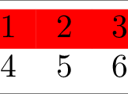

tabx.table¶
Module Contents¶
Classes¶
A LaTeX cmidrule. |
|
A collection of Cmidrules. |
|
Columns class for LaTeX tables. |
|
Colored Row. |
|
A cell in a table with optional formatting and spanning behavior. |
|
A LaTeX midrule. |
|
A LaTeX toprule. |
|
A LaTeX bottomrule. |
|
A row in a table. |
|
Base class rules. |
|
Table class for LaTeX tables. |
Functions¶
Create empty columns with |
|
Create an empty |
|
Create a list of |
|
Create an empty table with |
|
Creates columns with |
|
Creates a table with |
|
Creates a column with a multirow cell and empty cells. |
|
Creates a row with a multicolumn cell and empty cells. |
|
Concatenates tables. |
API¶
- class tabx.table.Cmidrule(start: int, end: int, trim: str = 'lr', dim: str = '')[source]¶
A LaTeX cmidrule.
Up to tree we go, this works in the docs:
Initialization
- class tabx.table.Columns(rows: Sequence[TableRow], align: str = '')[source]¶
Columns class for LaTeX tables.
This is the base of the
Tableobject.Initialization
- set_align(align: str)[source]¶
Set the alignment of the columns.
Hard to validate as e.g. with colored columns the alignment string becomes long and verbose.
- class tabx.table.ColoredRow(color: str)[source]¶
Bases:
tabx.table.RuleColored Row.
Stack it above a row in a
Tableto color the row.Requires the xcolor Latex package.
Examples:
from tabx import Table, Row, ColoredRow tab = Table.from_cells([[1, 2, 3], [4, 5, 6]]) tab = ColoredRow("red") / tab

Initialization
- tabx.table.empty_columns(nrows: int, ncols: int)[source]¶
Create empty columns with
nrowsandncols.
- class tabx.table.Cell[source]¶
A cell in a table with optional formatting and spanning behavior.
Represents a single value in a table, optionally spanning multiple columns or rows, and supporting LaTeX-style rendering (e.g., math mode, bold, italic).
Attributes
:value: The displayed value in the table cell.
name: An optional identifier or key for the cell (used internally).
style: Text style for LaTeX rendering: ‘math’, ‘bold’, ‘italic’, or ‘none’.multicolumn: Number of columns this cell spans.colspec: Alignment of multicolumn text (‘l’, ‘c’, or ‘r’).multirow: Number of rows this cell spans.width: Width specification for multirow cells (LaTeX syntax, e.g., ‘*’, ‘2cm’).
Raises:
ValueError: If both multicolumn and multirow are greater than 1.
{lineno-start=1 emphasize-lines=”2,3”}
from tabx import Cell print(Cell("1")) print(Cell("1")) print(Cell("1")) print(Cell("1"))
\multirow[〈vpos〉]{〈nrows〉}{〈width〉}[〈vmove〉]{〈text〉}
- value: NumOrStr¶
None
- tabx.table.filled_columns(nrows: int, ncols: int, value: str, **kwargs)[source]¶
Creates columns with
nrowsandncolsfilled withvalue.
- tabx.table.filled_table(nrows: int, ncols: int, value: str, **kwargs)[source]¶
Creates a table with
nrowsandncolsfilled withvalue.
- class tabx.table.Toprule[source]¶
Bases:
tabx.table.RuleA LaTeX toprule.
- class tabx.table.Bottomrule[source]¶
Bases:
tabx.table.RuleA LaTeX bottomrule.
- tabx.table.multirow_column(
- value: str,
- multirow: int,
- name: str = '',
- vpos: Literal[c, t, b] = '',
- vmove: str = '',
- width: str = '*',
- style: Literal[math, bold, italic, none] = 'none',
- pad_before: int = 0,
- pad_after: int = 0,
- align: str = 'c',
Creates a column with a multirow cell and empty cells.
- tabx.table.multicolumn_row(
- value: str,
- multicolumn: int,
- name: str = '',
- colspec: Literal[l, c, r] = 'c',
- pad_before: int = 0,
- pad_after: int = 0,
Creates a row with a multicolumn cell and empty cells.
- class tabx.table.Table(rows: Sequence[TableRow], align: str = '')[source]¶
Bases:
tabx.table.ColumnsTable class for LaTeX tables.
This is the main class for creating LaTeX tables. Implementation wise a
Tableis aColumnsobject with some extras functionality.Initialization
- tabx.table.concat( )[source]¶
Concatenates tables.
See also the operator overloading syntax.
>>> concat([table1, table2]) == table1 | table2 True
:param tables: List of tables to concatenate. :param how: How to concatenate the tables.
:returns: A new table with the concatenated rows or columns.